Having built event registration workflows in production using FormAssembly, I wanted to document the same architectural patterns using JotForm — a more accessible alternative for teams without enterprise form licensing. The core Salesforce data model is identical. The integration approach is similar. The connector-specific considerations are different enough to be worth documenting in detail.
This covers a two-part implementation: a public registration form open to anyone, and a personalised VIP invitation system for existing Salesforce Contacts. No AppExchange package. No Apex. Pure configuration, Flow, and deliberate architectural decisions about where the native connector's boundaries are and how to work within them.
The Use Case
Salesforce Integration Summit 2026 — used to demonstrate a production-representative event registration workflow. Two registration scenarios:
- Part 1 — Public Registration: Anyone with the form link can register. Salesforce creates or updates their Contact, matches or creates their Account by company name, and adds them as a Campaign Member linked to the event Campaign
- Part 2 — VIP Invited Registration: Existing Salesforce Contacts are personally invited via email. The invitation contains a pre-filled JotForm link — name, email, phone, and company already populated from Salesforce. They complete only the event-specific fields
The Data Model
Getting the data model right before touching JotForm is non-negotiable. The integration is only as good as the structure it writes into.
Campaign Hierarchy
Parent Campaign: Salesforce Integration Summit 2026
├── Child Campaign 1: Summit 2026 — Open Public Registration
└── Child Campaign 2: Summit 2026 — VIP Invited AttendeesCampaign hierarchy keeps all event data connected under one parent. Reporting, member counts, and follow-up actions roll up automatically — no manual aggregation, no cross-campaign queries.
Event Session — Custom Object, Not Picklist
The session preference field is a Custom Object (Event_Session__c), not a picklist. This is a deliberate scalability decision. Picklist values hardcode session names into the configuration layer — every new event requires a metadata change. With a custom object, sessions are data. Adding a new event means creating new records, not editing picklists or redeploying.
💡 Design principle
Sessions as records, not configuration. Event_Session__c is a child of Campaign. Each event owns its sessions. Sessions carry capacity, speaker, timing, and description fields. The data model scales cleanly across any number of events without touching configuration.
Campaign Member Status Values
| Status | Responded | Meaning |
|---|---|---|
| Sent | ❌ | Invited, not yet registered (VIP path only) |
| Registered | ✅ | Form submitted successfully |
| Attended | ✅ | Present on the day |
| No Show | ❌ | Registered but did not attend |
Custom Fields
On Contact:
Session_Name_Text__c— temporary bridge field for JotForm → Salesforce lookup resolutionVIP_Form_Submitted__c— Flow trigger for VIP registration processingIs_VIP__c— marks a Contact as VIP, triggers invitation FlowVIP_Registration_Link__c— stores the personalised pre-filled JotForm URLDietary_Requirements__c,T_Shirt_Size__c,Event_Source__c
On Campaign Member:
Session_Preference__c— Lookup to Event_Session__c
Part 1
Public Registration — JotForm Integration Architecture
The public form collects: Full Name, Email, Phone, Company, Session Preference, T-Shirt Size, Dietary Requirements, and How Did You Hear About Us. The native Salesforce connector creates records in a dependency chain — each step passes its record ID to the next:
Step 1 — Account (Create or Update, match by Name)
└── Company → Account Name
Step 2 — Contact (Create or Update, match by Email)
├── Name, Email, Phone
├── AccountId → from Step 1
├── Dietary, T-Shirt, Event Source
└── Session_Name_Text__c → Session Preference
Step 3 — Campaign Member (Create or Update)
├── CampaignId → Child Campaign 1
├── ContactId → from Step 2
└── Status → Registered⚠️ Step ordering is load-bearing
Account must exist before Contact can be linked. Contact must exist before Campaign Member can be created. JotForm handles the ID chaining automatically between steps — this is one area where the native connector works well.
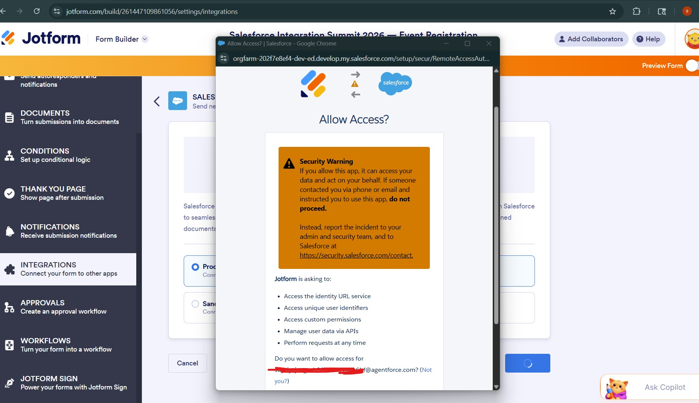
Connect Salesforce Org to JotForm
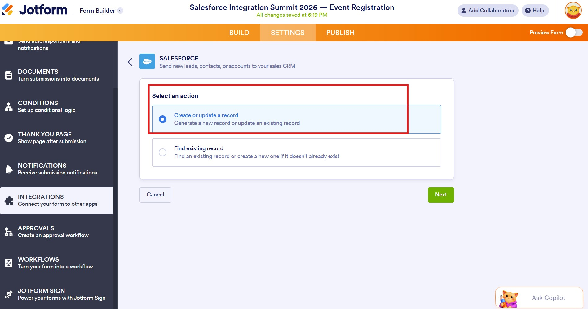
Set Actions
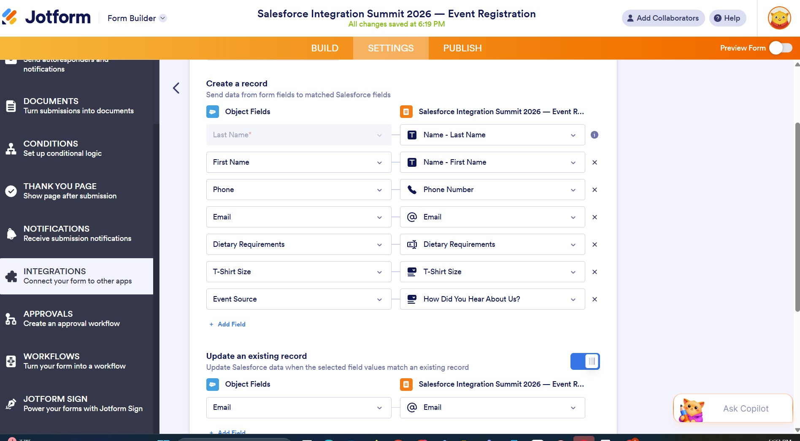
Map JotForm fields to Salesforce fields
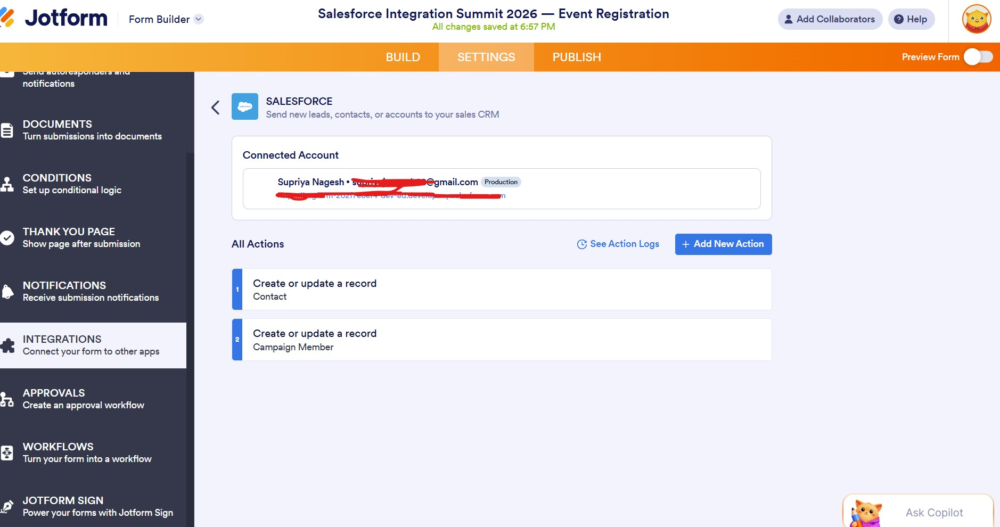
Actions in Settings → Integrations
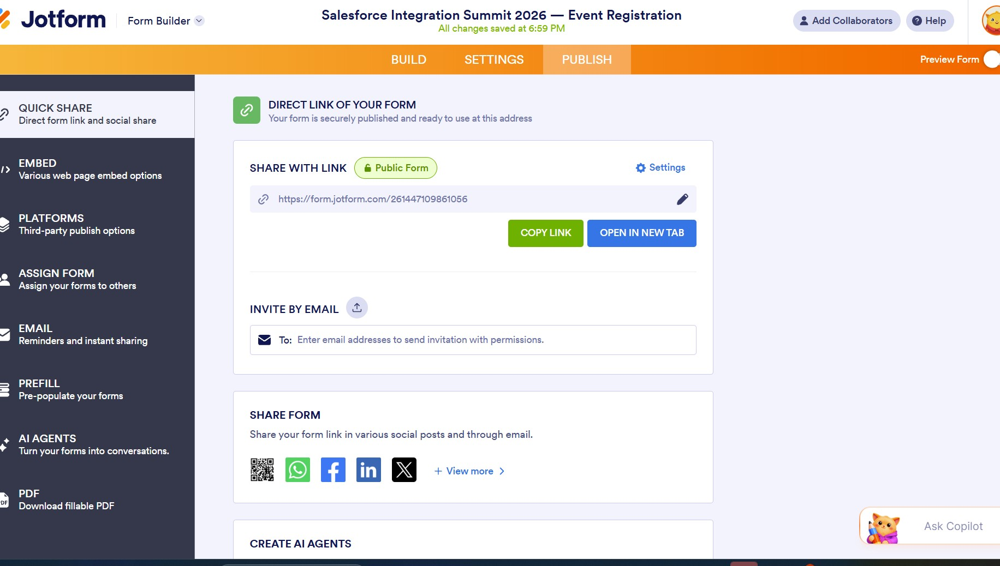
Publish the link

Setup a Thank You page
The Bridge Pattern
Lookup Field Resolution — Text to ID
Session Preference on Campaign Member is a Lookup field to Event_Session__c. JotForm dropdown fields pass text values. Salesforce lookup fields expect Record IDs. These are fundamentally incompatible at the connector level.
🔁 The standard bridge pattern
A temporary text field (Session_Name_Text__c) on Contact acts as a bridge. JotForm writes the text value there. A Flow reads it, queries the matching Event Session record, updates the lookup field with the correct ID, and clears the temp field. This pattern generalises — applicable anywhere a form tool needs to populate a Salesforce lookup.
Part 1 Automation
Flow 1 — Public Registration Flow
Trigger: Campaign Member created, CampaignId matches Child Campaign 1.
Campaign Member created
↓
Get Contact record
↓
Get Event Session (match Name to Session_Name_Text__c)
↓
Session found?
↓ Yes ↓ No
Update Campaign Member Create Task (session not found)
Session_Preference__c
↓
Send confirmation email
↓
Clear Contact.Session_Name_Text__c
↓ Fault Path → High Priority Task with error detail
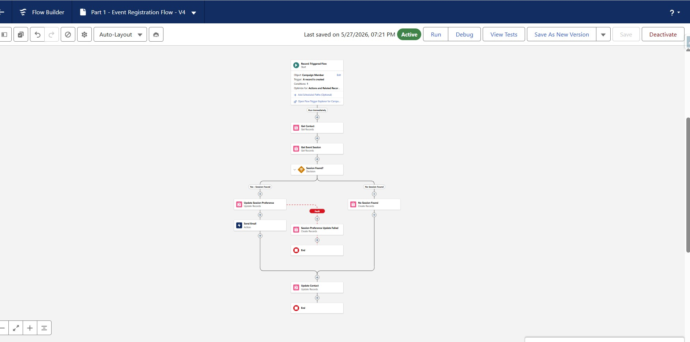
Flow 1 — Public Registration Flow
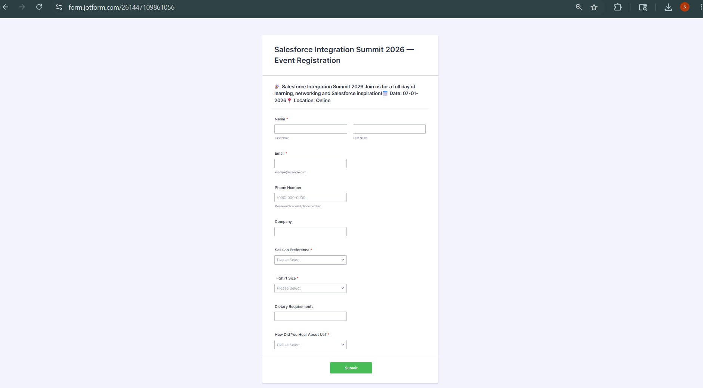
Public registration form
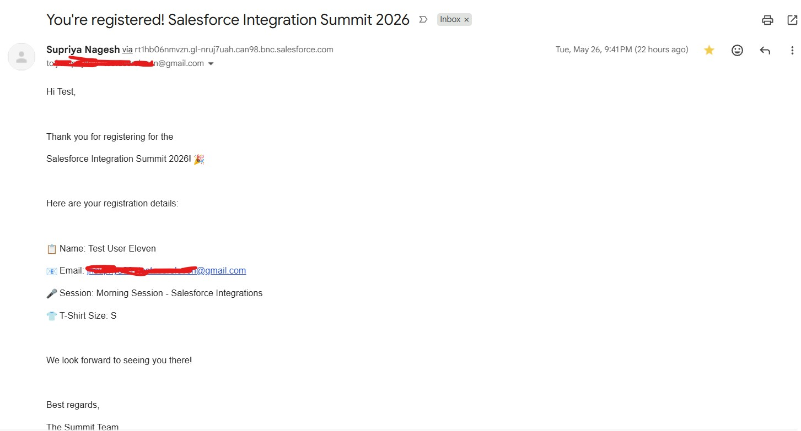
Confirmation email — public registration
Part 2
VIP Invited Registration — Architecture Decision
A checkbox on Contact (Is_VIP__c) is the integration trigger. When checked — by an admin, a Flow, or any process — the VIP invitation Flow fires automatically. The trigger is deliberately simple: one field, one clear intent. Integration logic stays in Flow, not embedded in data entry processes.
When Is_VIP__c is checked, three things happen automatically:
- The Contact is added to Child Campaign 2 with Status = Sent
- A personalised pre-filled JotForm URL is built from Contact field values
- An invitation email is sent containing the personalised link
The pre-filled URL format:
https://form.jotform.com/[formid]
?name[first]=John
&name[last]=Smith
&email=john@smith.com
&phoneNumber=+12015550101
&company=Acme Corp⚠️ Field unique names matter
Each parameter must exactly match the JotForm field's unique name — not the label. System-generated unique names don't always match field labels. One field in this build had a generated name of typeA rather than company. Always verify unique names explicitly in JotForm field properties before building pre-fill URLs.
Part 2 Automation
Flow 2 — VIP Invitation Flow & Flow 3 — VIP Update Flow
Flow 2 — VIP Invitation Flow
Trigger: Contact updated, Is_VIP__c transitions to True.
Is_VIP__c = True
↓
Get VIP Campaign (by Campaign Name)
↓
Campaign found?
↓ Yes ↓ No
Email check Create Task (no campaign)
↓ Has Email ↓ No Email
Add to VIP Create Task
Campaign (no email)
↓
Save VIP link on Contact
↓
Send invitation email
↓ Fault → Task
Flow 3 — VIP Update Flow
Trigger: Contact updated, VIP_Form_Submitted__c = True. The Status = Sent filter is the key identifier — public registration members always have Status = Registered, VIP members waiting to register always have Status = Sent. This combination uniquely identifies the correct Campaign Member without hardcoded IDs.
VIP_Form_Submitted__c = True
↓
Get Campaign (VIP Campaign Name)
↓
Get Campaign Member (ContactId + CampaignId + Status = Sent)
↓
Member found?
↓ Yes ↓ No
Get Event Session Create Task (no member)
↓
Update Campaign Member:
Status = Registered
Session_Preference__c = lookup ID
↓
Clear temp fields + Send VIP confirmation
↓ Fault → Task
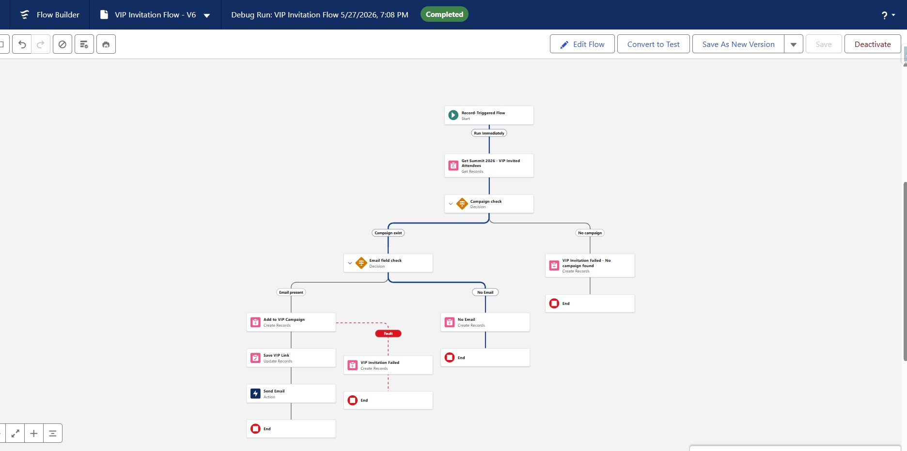
Flow 2 — VIP Invitation Flow
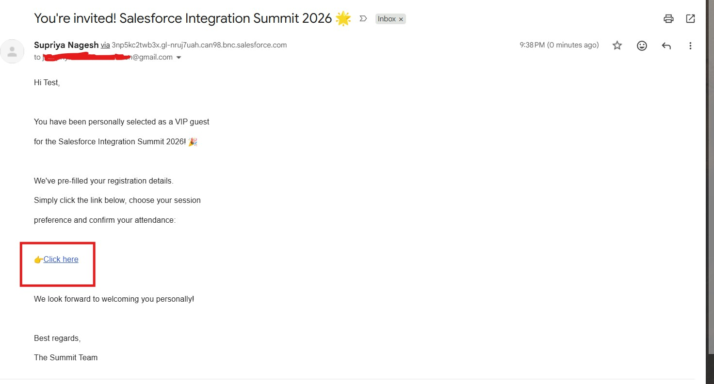
Personalised invitation email
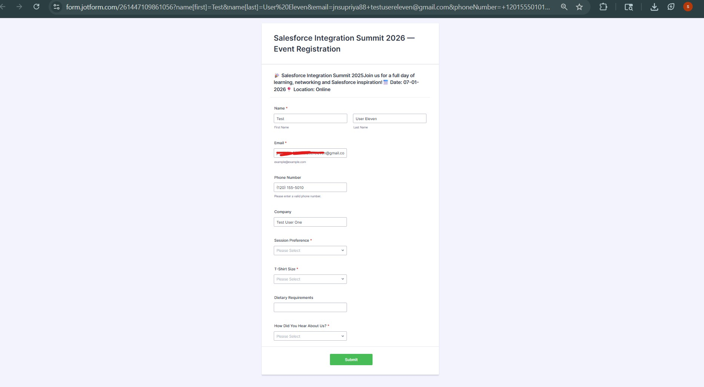
Pre-populated VIP form
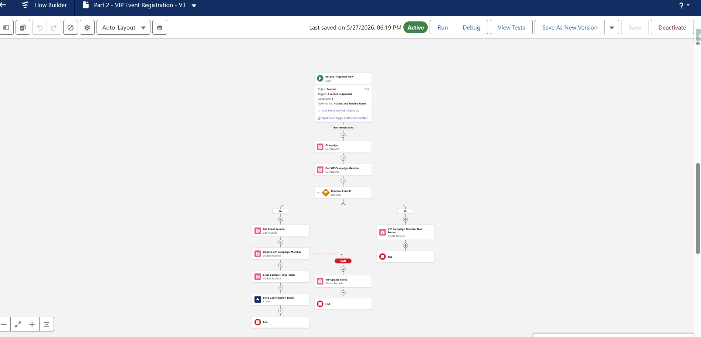
Flow 3 — VIP Registration Flow
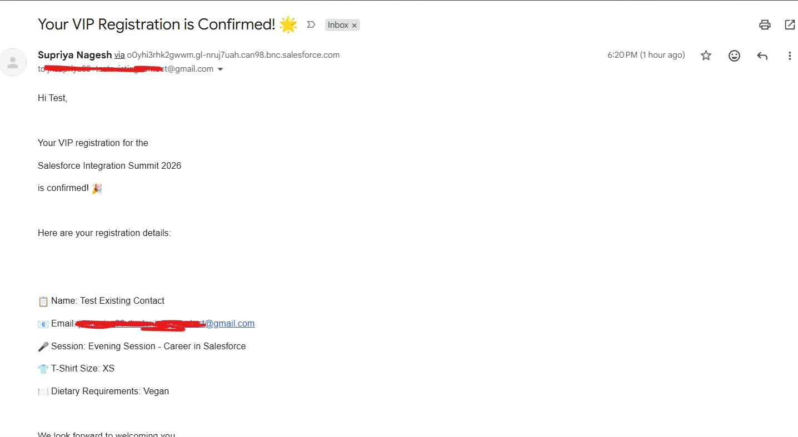
VIP confirmation email
Connector considerations
Six Architectural Tradeoffs — and Production Paths
typeA rather than company. Always check unique names in JotForm field properties before building pre-fill URLs.Key Design Decisions
| Decision | Rationale |
|---|---|
| Event Session as custom object | Sessions are data, not configuration. New events need new records, not metadata changes or deployments. |
| Campaign Hierarchy | All event data rolls up to one parent. Cross-type reporting and follow-up Flows operate at parent level without cross-campaign queries. |
| Session_Name_Text__c as reusable pattern | A pattern, not a workaround. Applicable across any form tool integration needing to populate lookup fields. |
| Is_VIP__c as integration trigger | Any process that checks the box triggers the invitation — manual entry, import, another Flow, an API call. Integration logic in one place, decoupled from data entry. |
| Status = Sent as VIP identifier | Uniquely identifies the correct Campaign Member without hardcoded IDs. Public members always have Status = Registered. |
Try the live form
The public registration form is connected to a live Salesforce dev org. Submit with test data to see the full chain: form submission → Salesforce record creation → confirmation email. Use a real email address. Gmail users: confirmation may land in spam due to dev org sending — Outlook or Yahoo is more reliable. The form has a 100 submission limit.
Built on Salesforce Developer Org · JotForm · Salesforce Flow · Campaign Hierarchy · Custom Objects